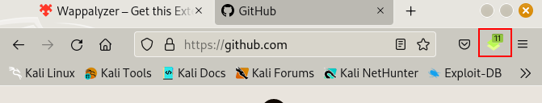

Identifying Web Technologies
This is geared more towards when doing recon on a website, a useful bit of information would be the tech stack used to craete the website. If you can find out the tech stack then you could find out maybe the version of the stack. You could be able to find any bugs or issues with the version and use that as a possible exploit. This tyoe of apporach would not be the magic bullet to your problem but it would help you in your quest to gtehr as much data as possible.
buildwith.com
Enter the domain that you want to search for and it will tell you the tech stack about the site.
Wappalyzer - Firefox
In your virtual machine Google and download Wappalyzer for Firefox. With Wappalyzer, when you are browsing websites it has an inetractive tool that analyses what tech stack is being used. It has a pop up at the corner of the screen where you can click and check on the tech stack of the page.

This is indicating that this page has 11 tech features.

When we click on the icon we get to see all the different tech stacks being used
whatweb
This is another tool at our disposal that we can use to gather information on a website. This is built into Kali Linux so we just need to use whatweb follwoed by the domain name.
whatweb tesla.com

You can see you get a all types of information of the website
If we look closely we can see the the website's IP address from the different parts locations, you can see the operating system (which is Drupal), you can see what languages are used in the scripts amongst other things.